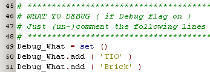
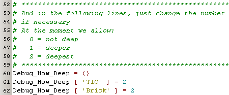
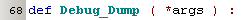
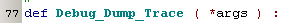
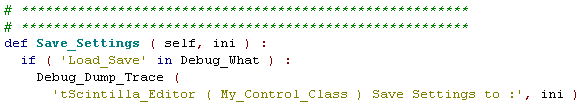
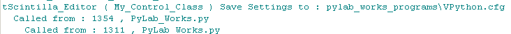
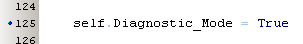
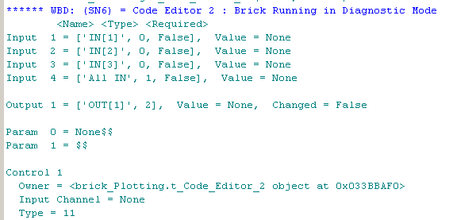

april 2008
Debugger / Diagnostics 
Application Designer / Domain Expert / Control Designer / Core Developer
Debug Options
For debugging we want to control what information are we interested in, what level of detail we're interested to see and where we want to see the information. In General_Globals.py a number of debug facilities is located.
To activate debugging, you need to specify the commandline flag -debug .




For a number of complex objects, the dump routine will automatically use a significant part, so for a inifile it will only use the filename. So we can simply dump a inifile, like this :

which will result in:

Bricks Diagnostics
By setting the Diagnostics flag of a brick to True, it lot of diagnostic information of both that Brick itself and the used controls in that Brick will be printed.

